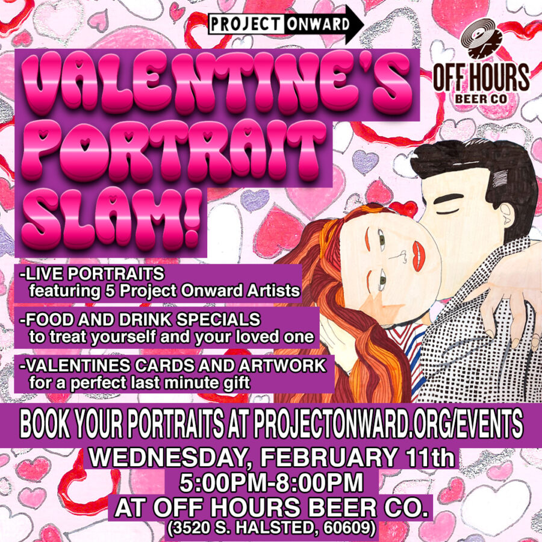

Valentine’s Portrait Slam!
Join Project Onward (a non-profit studio and gallery for artists with mental and developmental disabilities) for a special Portrait Slam at Off Hours Beer Co. inside the historic Ramova Theater. From 5:00–8:00 PM, five Project Onward artists will be creating one-of-a-kind, hand-drawn portraits on the spot. Food and drink specials will be available at Off Hours during the slam. Artwork will also be available for sale, a perfect time to buy any last minute Valentine’s gifts for a loved one.
Whether you’re stopping by with a friend, bringing a date, or looking for a meaningful gift, these portraits make a unique keepsake and shared experience, something personal you can’t find anywhere else.
How It Works:
Reserve in Advance (Recommended)
Book a portrait appointment ahead of time through our Jotform reservation link on our RSVP page. After reserving, you’ll receive an invoice to confirm your spot. Advance reservations guarantee your time slot and allow you to request a preferred artist.
We’ll also be accepting walk-ins throughout the evening. Walk-in portraits are available as space allows, but preferred artist selection cannot be guaranteed.